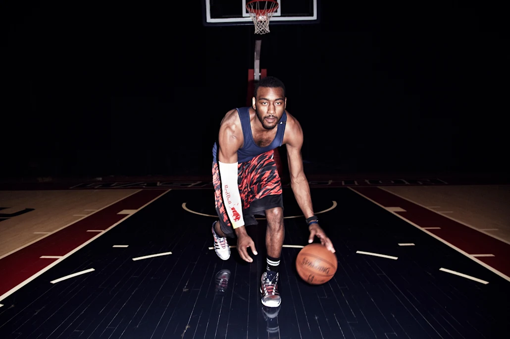
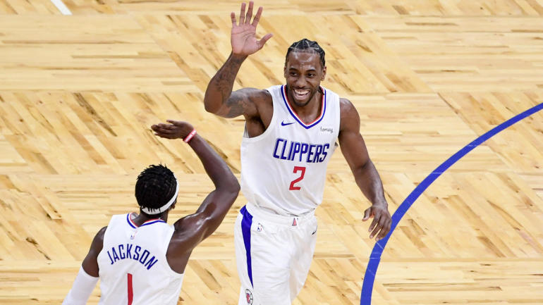
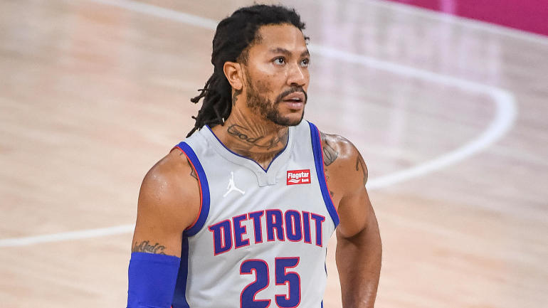

- James Naismith invented basketball
Asked in 1891 to invent an indoor winter activity by his boss at a YMCA in Springfield, Massachusetts, James Naismith is credited as the founder of basketball. Naismith, a physical education teacher, also wrote the original basketball rule book and founded the University of Kansas basketball program. - Basketball was played with a different ball
As bizarre as it sounds, basketball was originally played with a soccer ball and peach baskets, with referees having to retrieve the ball each time a player made a basket. In 1900, the string baskets we know today were introduced to the game and, later, backboards were attached to prevent spectators from blocking a shot. - Dribbling wasn't allowed
Players never could advance the ball. Instead, each player had to throw it from wherever he caught it. The first team credited with advancing the ball by dribbling it played at Yale in 1897, and the official allowance for the dribble, just one per possession at first, were adopted four years later. Another important basketball move, the slam dunk, was banned just before the 1967-1968 season until the 1976-1977 season.
 - More players per side
The number of players per side was never specified. Naismith invented an indoor winter activity and wanted a game flexible enough to include whoever wanted to play. For a while, the total number of players was a default 18, nine per side, the same number that showed up for the very first game. - Fouls played - Shouldering, holding, pushing, tripping or otherwise striking an opponent was never allowed. However, such offenses were never considered fouls until 1910, with the advent of a rule disqualifying a player for committing four of them. That total was raised to five in 1946, in the inaugural rules of the Basketball Association of America (the original name of the National Basketball Association), and to six the next year.
- Referees used watches-- That is because one of the official duties of early refs was timekeeping. Then again, there wasn’t that much time to keep: the 24-second shot clock wasn’t instituted until 1954, to combat stalling tactics NBA teams had begun to employ.
- The 1979 NCAA tournament was the start of basketball greats- College basketball remains one of the most popular sports, but spectators remember the Michigan State versus Indiana State college basketball game of 1979 during the NCAA tournament, which is one of the best-rated games in the sport's history. As a matchup between Magic Johnson and Larry Bird, who had never played each other prior to this tournament, this game marked the beginning of having basketball greats and NBA stars.
- Possession rules changed in 1913- The game as we know it gives possession of an out-of-bounds ball to the player who last had contact with it, but that wasn't always the case. Prior to 1913, a referee would pick up and throw an out-of-bounds ball down the court, and the first player to touch it retained possession. The rules eventually changed because of the increase in the number of player injuries.
- Michael Jordan paid fines for wearing his shoes- You probably connect Michael Jordan with his legendary Air Jordans, a now-iconic shoe because of its record sales numbers. What you may not know is that these shoes used to be against NBA dress code. Michael Jordan paid an NBA fine each time he wore them rather than play the game without them. Eventually, the NBA allowed the shoes on the court. To get in the basketball spirit, be sure to check out the Red Bull 3X event page for more information on the 3x3 Basketball Tournament being held in 20 cities across the United States.
All about basketball

Kawhi Leonard playing at MVP level as Clippers'
I remember talking to Portland Trail Blazers coach Terry Stotts a couple years ago about the NBA's growing fascination with volume passing, which is to say the number of passes a team is making per game. The dynastic Golden State Warriors made it cool, whipping the ball around 300-plus times for 30-some assists a night, but Stotts found the notion that all passes, and perhaps more importantly, passers, are created equal to be deceiving. Is an extra pass to a worse shooter a good thing? Don't some of the best shots come early in the clock? Didn't those old Warriors teams have some of the smartest passers and best shooters in history? Sure, they can move the ball all over the place and it's still going to end up in the hands of an all-time sniper. The Blazers don't want Damian Lillard to pass up a shot on an isolation so three more passes can be made for a Rodney Hood contested jumper later in the clock.
Kawhi best moments

Knicks adding Derrick Rose via trade only creates logjam in already-muddled New York rotation
Tom Thibodeau's rotation has been a subject of much consternation so far this season. According to the Knicks' coach, playing time is "based on performance. You play well, you play more." It's just that Thibodeau's performance rubric tends to slant toward veterans, and it has since his early days in Chicago. If a young Jimmy Butler couldn't crack the starting lineup until midway through his second season, what chance does Immanuel Quickley have? Apparently, not much of one. New York's star rookie has outperformed veteran starter Elfrid Payton on virtually every front so far this season, yet has averaged only around 14 minutes across New York's past three games. Now, he'll have to fight even harder for a smaller slice of the point guard pie. The Knicks made a trade to acquire longtime Thibodeau favorite Derrick Rose, a move intended to juice their 25th-ranked offense, but at a cost far greater than the second-round pick they surrendered to complete the deal.